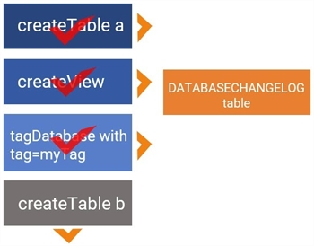

updateToTag <tag> commandThe updateToTag <tag> command applies sequential changes to your database from the newest
The updateToTag <tag> command is mainly used to apply changes sequentially, starting with the
Even though there are other undeployed changes in the
The image below shows the

Running the command updateToTag myTag, creates the table, the view, and the tag on the
<?xml version="1.0" encoding="UTF-8"?>
<databaseChangeLog
xmlns="http://www.liquibase.org/xml/ns/dbchangelog"
xmlns:xsi=http://www.w3.org/2001/XMLSchema-instance
xmlns:pro=http://www.liquibase.org/xml/ns/pro
xsi:schemaLocation="http://www.liquibase.org/xml/ns/dbchangelog http://www.liquibase.org/xml/ns/dbchangelog/dbchangelog-3.8.xsd
http://www.liquibase.org/xml/ns/pro http://www.liquibase.org/xml/ns/pro/liquibase-pro-3.8.xsd ">
<changeSet author="liquibase-docs" id="createTable-example a"
<createTable catalogName="sample"
remarks="A String"
schemaName="public"
tableName="person"
tablespace="A String">
<column name="address" type="varchar(255)"/>
</createTable>
</changeSet>
<changeSet author="liquibase-docs" id="createView-example">
<createView catalogName="sample"
encoding="UTF-8"
fullDefinition="true"
path="A String"
relativeToChangelogFile="true"
remarks="A String"
replaceIfExists="false"
schemaName="public"
viewName="v_person">select id, name from person where id > 10 </createView
</changeSet>
<changeSet author="liquibase-docs" id="tagDatabase-example"
<tagDatabase tag="myTag"/
</changeSet>
<changeSet author="liquibase-docs" id="createTable-example b"
<createTable catalogName="sample"
remarks="A String"
schemaName="public"
tableName="person"
tablespace="A String"
<column name="address" type="varchar(255)"/
</createTable
</changeSet>
Additionally, the best practice is to run the updateToTagSQL <tag> helper command to inspect the updateToTag <tag> SQL, so you can correct any issues that may arise before running the command.
updateToTag <tag> commandTo run the updateToTag <tag> command, you need to specify your driver, class path, URL, and user authentication information in your liquibase.properties file. You can also specify these in your command line.
Then run the updateToTag <tag> command:
--changeLogFile=communityOnly.xml updateToTag myTag
Enter the name of the communityOnly.xml and myTag.
updateToTag <tag> global attributes| Attribute | Definition | Requirement |
|---|---|---|
|
|
The root |
Required |
|
|
The JDBC database connection URL |
Required |
|
|
The database username |
Required |
|
|
The database password |
Required |
*
updateToTag <tag> command attributes| Attribute | Definition | Requirement |
|---|---|---|
|
|
The tag you can add to |
Required |
Liquibase Pro 4.0.0-beta2-LB-337-SNAPSHOT by Datical licensed to Liquibase Pro Customer until Tue Nov 03 19:00:00 CST 2020
Starting Liquibase at 15:27:55 (version 4.0.0-beta2-LB-337-SNAPSHOT #2 built at 2020-06-23 19:48+0000)
Liquibase command 'updateToTag' was executed successfully.